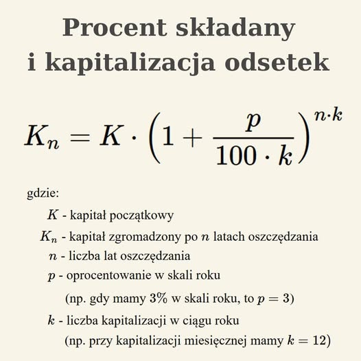

Raty, procent składany oraz szybkie inwestycje
Zrozum mechanizmy, które decydują o Twoim zysku lub stracie.
Raty 0% - gdzie jest haczyk matematyczny?
Co oznacza "0%"?
W bankowości 0% oznacza najczęściej brak odsetek lub prowizji w ofercie ratalnej (tzw. "raty 0%" dla towarów) lub zerowe RRSO dla kredytów gotówkowych, co pozwala spłacić dokładnie tyle, ile się pożyczyło, jednak zawsze trzeba sprawdzać szczegóły, gdyż koszty mogą być ukryte w marży na towarze, dodatkowych opłatach lub być limitowane czasowo.
Koszt ukryty w cenie towaru
Koszty ukryte w cenie towaru to opłaty poza ceną widoczną na pierwszy rzut oka, jak np. niespodziewane prowizje za płatności/dostawy, koszty pozyskania informacji (dojazd, czas), opłaty transakcyjne czy koszty alternatywne, które obciążają konsumenta, choć nie są jawnie wyodrębnione.
Prowizje, ubezpieczenia oraz opłaty dodatkowe
Prowizja - forma wynagrodzenia lub opłaty za wykonanie określonej usługi, najczęściej wyrażona jako procent od wartości.
Ubezpieczenie - umowne zobowiązanie towarzystwa do wypłaty świadczenia na wypadek powstania określonych zdarzeń.
Opłaty dodatkowe - z reguły dodatkowe koszty doliczane do podstawowej ceny usługi, wynikające z okoliczności specjalnych.
Porównanie: zakup za gotówkę VS raty 0%
Zakup za gotówkę jest prostszy i eliminuje ryzyko dodatkowych kosztów; raty 0% pozwalają zachować płynność i pomnażać kapitał, ale wymagają dyscypliny w spłacie i mogą wiązać się z wyższą ceną produktu lub ukrytymi opłatami.
Analiza rzeczywistego kosztu
Analiza rzeczywistego kosztu (ARK) to proces identyfikacji, mierzenia i oceny wszystkich faktycznie poniesionych wydatków, aby zrozumieć prawdziwy koszt jednostkowy i podjąć lepsze decyzje biznesowe.
Procent składany - przyjaciel czy wróg?
Mechanizm procentu składanego
Procent składany działa na zasadzie "odsetek od odsetek": naliczone odsetki są dopisywane do kapitału początkowego, tworząc nową, wyższą bazę do naliczania odsetek w kolejnych okresach, co przyspiesza wzrost kapitału w czasie.
Zadanie 1
Oblicz kapitał zgromadzony po 5 latach, przy kapitale początkowym 20 000 zł. Kapitalizacja miesięczna wynosi 6 miesięcy, a oprocentowanie w skali roku wynosi 2%.
Procent składany w oszczędzaniu
To mechanizm, w którym naliczone odsetki są doliczane do kapitału, co powoduje wykładniczy wzrost oszczędności i jest kluczowe w długoterminowym budowaniu majątku, działając jak kula śnieżna.
Procent składany w kredycie
W kredycie naliczone odsetki doliczane do salda zadłużenia powodują szybszy wzrost całkowitego długu. Jest niekorzystny dla dłużnika, gdyż zwiększa całkowity koszt pożyczki.
Wykres wzrostu i spadku wartości
Najczęściej przedstawia się go za pomocą wykresu liniowego, idealnego do pokazywania trendów w czasie, lub wykresu kaskadowego, który pokazuje skumulowany efekt wielu elementów.
Dlaczego czas działa na naszą niekorzyść?
Czas w biznesie działa na niekorzyść, ponieważ problemy eskalują, koszty rosną, a szanse na sukces maleją wraz z opóźnieniem reakcji, co prowadzi do utraty przewagi konkurencyjnej.
Pewien biznesmen postanowił kupić akcję na giełdzie. Zobaczył, że akcja którą kupił poszybowała w górę. Postanowił zaczekać chwilę zanim to sprzeda, natomiast akcja spadła ekstremalnie w dół.
Dlaczego szybkie inwestycje prawie zawsze kończą się stratą?
Obietnice "szybkiego zysku"
Obietnice szybkiego zysku to powszechna taktyka oszustów wykorzystujących manipulację i presję czasu. W inwestycjach zawsze istnieje ryzyko, a pewnych, wysokich zysków nie gwarantuje nikt.
Matematyczne ryzyko
Matematyczne ryzyko - formalne podejście do kwantyfikacji niepewności, mierzone za pomocą wariancji czy odchylenia standardowego w celu oceny prawdopodobieństwa strat.
Zmienność VS oczekiwana wartość
Zmienność mierzy rozproszenie danych wokół wartości centralnej, podczas gdy wartość oczekiwana to teoretyczna średnia, wskazująca spodziewany wynik po wielu powtórzeniach doświadczenia.
Przykład strat przy krótkim horyzoncie czasowym
Strata przy krótkim horyzoncie czasowym jest znacznie bardziej prawdopodobna, ponieważ rynek jest chaotyczny. Inwestycje długoterminowe uśredniają te wahania, redukując ryzyko.
Mit "łatwego pieniądza"
Zakłada, że bogactwo można zdobyć bez wysiłku. Rzeczywistość pokazuje, że budowanie majątku wymaga czasu, dyscypliny, cierpliwości i ciężkiej pracy.